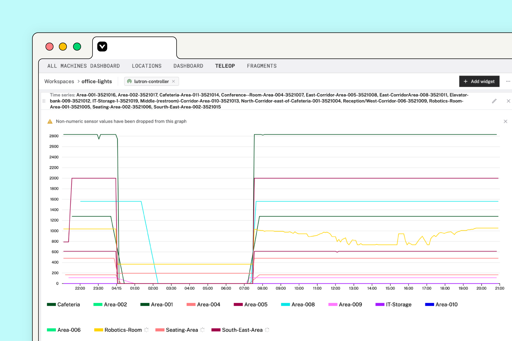
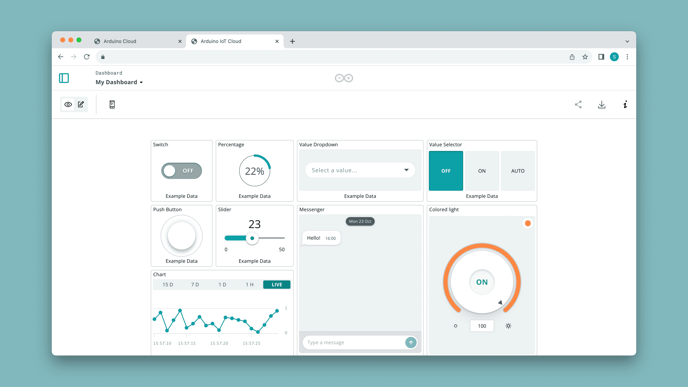
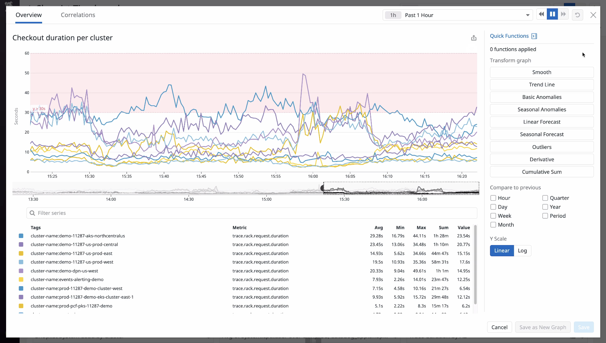
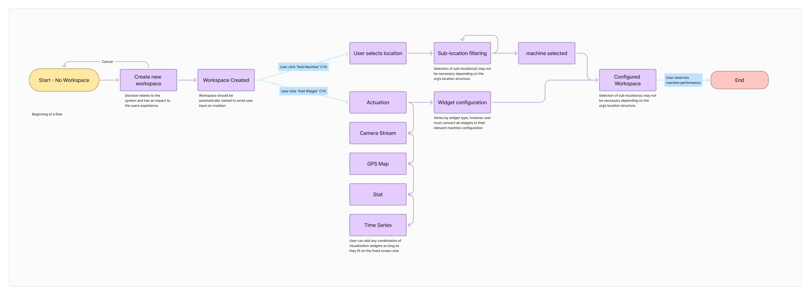
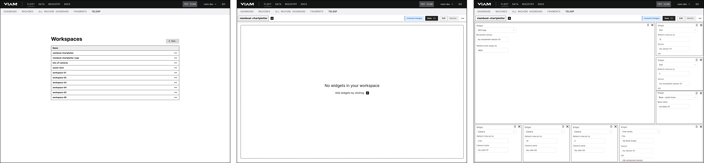

Remote sensor visibility and control in real time

Many companies lack real-time visibility into their machines due to fragmented systems, outdated hardware, and inconsistent data standards. These gaps make it difficult to detect issues early, integrate insights, or respond quickly, especially in remote or infrastructure-poor environments.
While Viam could collect data from a wide range of input sources and expose it through the UI and exports, the information was fragmented and difficult for users to interpret or act on effectively.
I conducted interviews with internal stakeholders (product, engineering, support) and shadowed solutions engineers during real machine setup. I also benchmarked tooling from competitors like Arduino and Datadog. These efforts revealed a common theme: while the platform surfaced vast amounts of sensor data, users lacked the context or structure to interpret it confidently. Developers wanted tools that felt native to their workflow, familiar layouts, responsive controls, and streamlined diagnostics.

Arduino IoT dashboard: Device-centric, but not built for robotic sensor workflows.

Datadog: Excellent for server observability, less intuitive for machine telemetry.
I mapped out the core user journeys for different personas, including solutions engineers and developers. Early flows prioritized quick access to machine status, streamlined manual control interactions, and fallback paths for degraded network environments.

Low-fidelity wireframes tested different structural models: tabbed dashboards, collapsible sensor panels, and split-view layouts combining control and telemetry. Wireframes helped validate navigation hierarchy and the balance between overview and detail views.

Through rounds of feedback and internal testing, we refined the UI to prioritize actionability — surfacing the most critical sensor states first and simplifying manual overrides. Design iterations also focused on making the dashboard feel responsive even under slower network conditions, improving trust during remote operations. Side panel for configuration of widgets instead of an edit mode
Need to create a new workspace from an existing machine
Sensor Feeds (LiDAR, Camera, GPS)
Live Dashboard (Sensor Monitoring)
Manual Control Panel (Remote Actions)
Diagnostics & Health Reporting
Centralized view of visual, spatial, and diagnostic sensor data for live machine monitoring.
Centralized view of visual, spatial, and diagnostic sensor data for live machine monitoring.
Modular setup for selecting, arranging, and customizing live data and control widgets across the dashboard.
Centralized view of visual, spatial, and diagnostic sensor data for live machine monitoring.